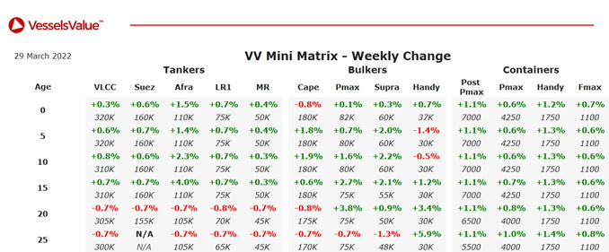

Tanker:Modern Aframax values have firmed.
LR2 STI Carnaby (110,000 DWT, Sep 2015, Sungdong) sold for USD 43.00 mil, VV value USD 43.84 mil.
LR2 STI Savile Row (110,000 DWT, Jun 2015, Sungdong) sold for USD 43.00 mil, VV value USD 43.03 mil.
MR2 STI Benicia (52,000 DWT, Sep 2014, SPP) sold for USD 26.50 mil, VV value USD 27.57 mil.
MR2s Hull 1930 and Hull 1931 (49,800 DWT, Jan & Mar 2023, K Shipbuilding) sold to Pacific Carriers in an en bloc deal for USD 77.70 mil, VV en bloc value USD 74.36 mil – Resale.
Bulker:Modern Panamax and Supramax values have firmed.
Capesize Baosteel Evolution (206,300 DWT, Mar 2007, Imabari) sold to Chinese buyers for USD 21.80 mil, VV value USD 26.81 mil – SS/DD Due.
Panamax Ocean Garlic (82,300 DWT, Sep 2012, Dalian Shipbuilding Industry Corp) sold for USD 21.50 mil, VV value USD 24.72 mil – SS/DD Due.
Supramax Mandarin Ocean (56,700 DWT, Feb 2012, Jiangsu Hantong Ship Heavy Industry) sold to Singaporean buyers for USD 17.25 mil, VV value USD 17.25 mil.
Supramax Mandarin Crown (56,400 DWT, Jun 2012, Jiangsu Hantong Ship Heavy Industry) sold to Chinese buyers for USD 17.25 mil, VV value USD 17.50 mil – SS Due.
Supramax Shangrila (52,300 DWT, Sep 2001, Tsuneishi Zosen) sold to Chinese buyers for USD 12.75 mil, VV value USD 12.71 mil – BWTS fitted.
Supramax Lucky Sea (52,200 DWT, Jan 2005, Yangzhou Dayang Shipbuilding) sold to Chinese buyers for USD 12.00 mil, VV value USD 12.93 mil.
Handy Global Echo (28,200 DWT, Sep 2012, I-S) sold for USD 15.30 mil, VV value USD 16.47 mil – BWTS fitted.
Container:Container values have remained stable.
Feedermax Talisker (1,129 TEU, Oct 2001, Stocznia Gdynia) sold to MSC for USD 17.00 mil, VV value USD 16.29 mil.
